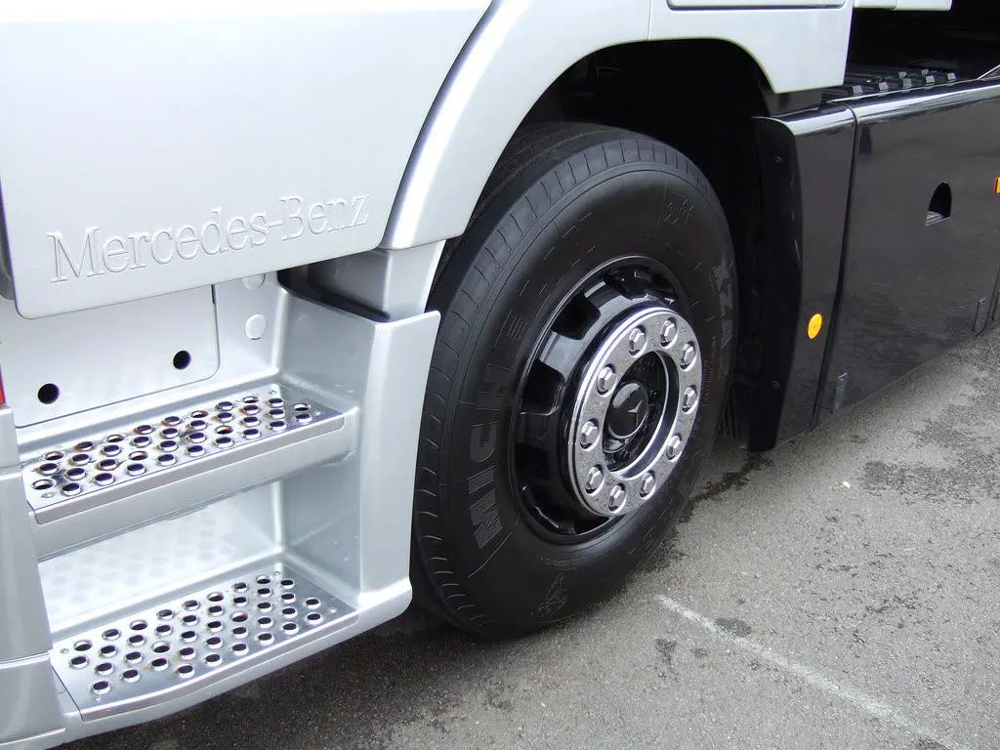
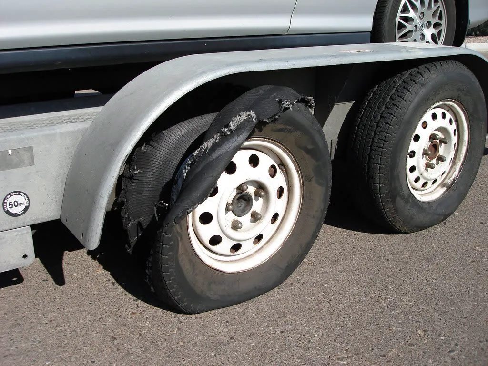
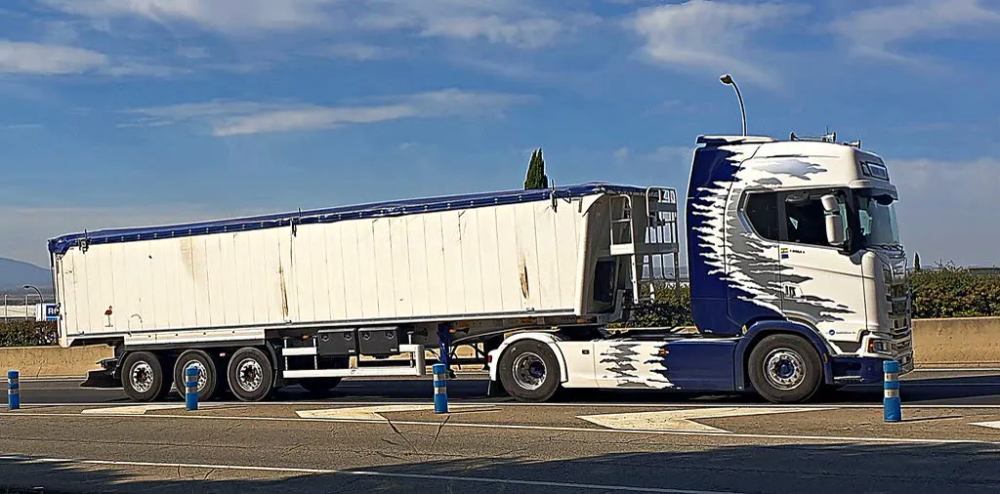
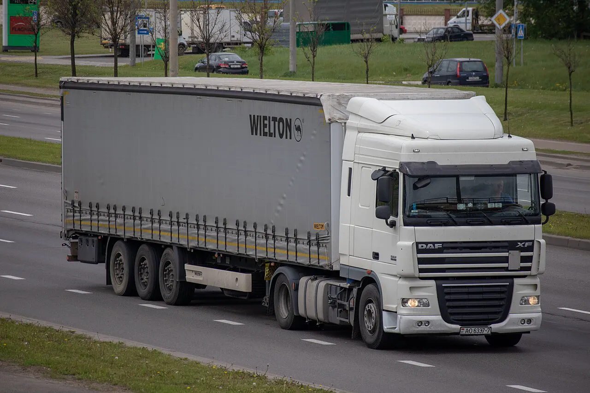

Bandenpech met uw vrachtwagen? Wij komen naar u toe.
Lekke band, klapband of een band die leegloopt: onze servicewagen rijdt uit naar de vluchtstrook, de parkeerplaats of uw eigen terrein. Zo staat uw combinatie zo kort mogelijk stil.
Bandenservice voor vrachtwagens en trailers
Van een klapband op de snelweg tot een preventieve controle op uw eigen terrein. Alles op locatie, met het juiste materieel voor zwaar transport.

Band vervangen
Versleten of beschadigde banden vervangen op locatie, met professioneel materieel.
Meer informatie
Lekke band repareren
Waar het veilig kan repareren we de band, zodat u snel verder kunt met uw rit.
Meer informatie
Mobiele bandenmontage
Montage en balanceren op de plek waar uw voertuig staat. U hoeft nergens naartoe.
Meer informatie
Trailerbanden
Service en vervanging voor opleggers, aanhangers en trailers van zware voertuigen.
Meer informatie
Pechservice langs de weg
Bandenpech onderweg? Wij rukken uit en helpen u op de vluchtstrook of parkeerplaats.
Meer informatie
Controle en bandenspanning
Preventieve controle van spanning en profiel, om pech en stilstand te voorkomen.
Meer informatieWelke band is het?
Tik de band aan in de tekening. Wij krijgen dan precies te zien om welke band het gaat en nemen direct de juiste maat en het juiste gereedschap mee.
1Kies uw voertuig
2Tik op de band met pech
3Wat is er aan de hand?
4Bandmaat, als u die weet
In vier stappen weer op weg
Hoe meer we vooraf weten, hoe sneller we met de juiste band bij u zijn.
Bel of app ons
Neem direct contact op via telefoon of WhatsApp bij bandenpech.
Deel de gegevens
Locatie, kenteken en welke band het is, eventueel met een foto van de bandmaat.
Wij komen naar u toe
Onze servicewagen rijdt uit met het juiste materieel en de juiste maat.
Weer op weg
We vervangen of repareren de band ter plekke en u rijdt verder.
Zo blijft u veilig tot wij er zijn
- Alarmlichten aanZet de combinatie zo ver mogelijk rechts op de vluchtstrook en plaats de gevarendriehoek als dat veilig kan.
- Hesje aan, achter de vangrailBlijf niet in of naast de cabine staan. Wacht met uw hesje aan achter de vangrail.
- Geef de hectometerpaal doorHet nummer en de letter op het paaltje vertellen ons precies waar u staat en in welke rijrichting.
- Bel of app onsMet locatie, kenteken en welke band het is komen we in één keer met de goede band.

Gespecialiseerd in banden voor zwaar transport
Stilstand kost tijd en geld. Daarom richten wij ons volledig op de banden van vrachtwagens, trailers en zware bedrijfsvoertuigen. Wij weten hoe zwaar die banden zijn, welke maten er rijden en hoe je veilig werkt naast een rijstrook.
- Werken op de plek waar uw voertuig staat
- Korte, duidelijke communicatie met chauffeur en planning
- Uitsluitend zwaar transport, trailers en opleggers
- Factuur op naam van uw bedrijf, met kenteken en bandpositie
Actief in heel Nederland
Onze servicewagen rijdt uit in alle 342 gemeenten van Nederland, dag en nacht. Langs de snelweg, op bedrijventerreinen, bij distributiecentra en op uw eigen terrein.

Goed om te weten
Helpen jullie alleen vrachtwagens?
Ja. Wij werken uitsluitend aan vrachtwagens, trailers, opleggers en zware bedrijfsvoertuigen. Voor personenauto's kunt u beter een gewone pechhulpdienst bellen.
Kan ik direct bellen bij bandenpech?
Zeker. Bellen is het snelst. Wilt u liever appen, stuur dan uw locatie en een foto van de band via WhatsApp.
Repareren jullie ook banden op locatie?
Waar het veilig en verantwoord kan, repareren we de band ter plekke. Is de band daarvoor te zwaar beschadigd, dan vervangen we hem.
Welke informatie hebben jullie nodig?
Uw locatie, het kenteken, welke band het is en het liefst de bandmaat. Die staat op de zijkant van de band, bijvoorbeeld 385/65 R22.5. Een foto is ook goed.
Hoe snel kunnen jullie er zijn?
Dat hangt af van waar u staat en waar onze servicewagen op dat moment is. Bij uw melding zeggen we eerlijk hoe laat we er kunnen zijn.
Welke betaalmogelijkheden zijn er?
Zakelijke klanten betalen op factuur. Ter plekke pinnen kan ook. Op de factuur staan het kenteken en de bandpositie, handig voor uw administratie.
Bandenpech met uw vrachtwagen?
Wij komen naar u toe. Bel of app ons direct, dan zeggen we wanneer we er zijn.